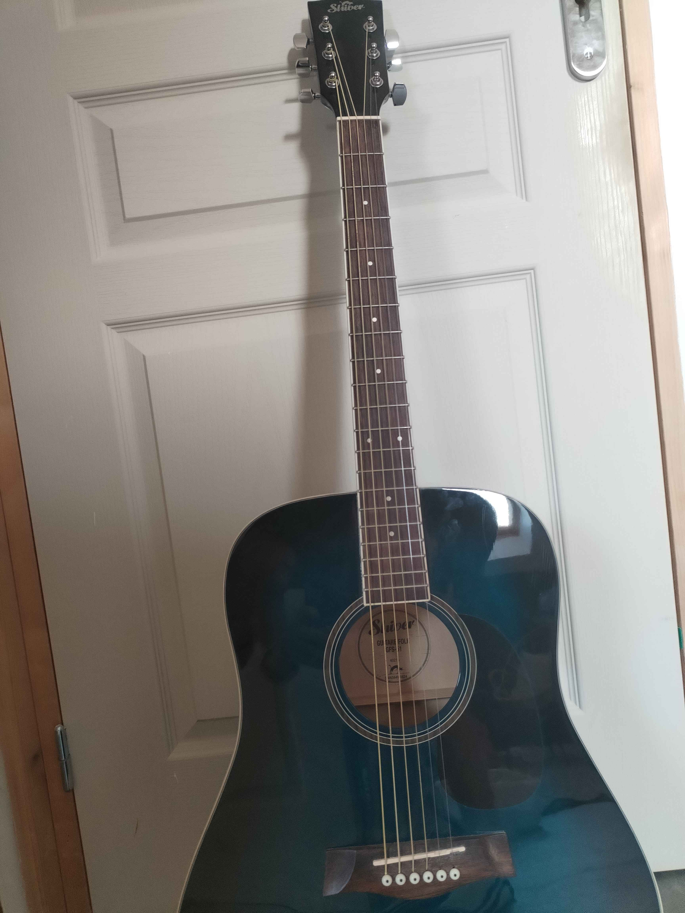
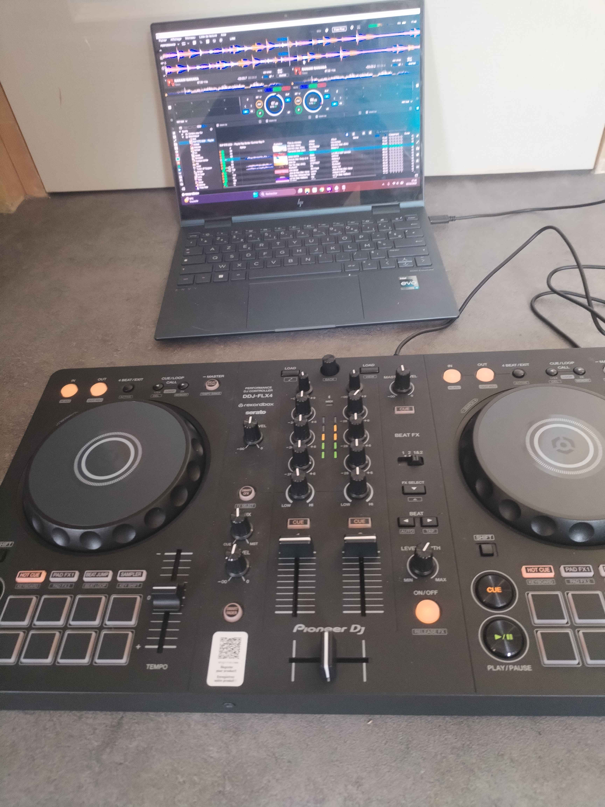
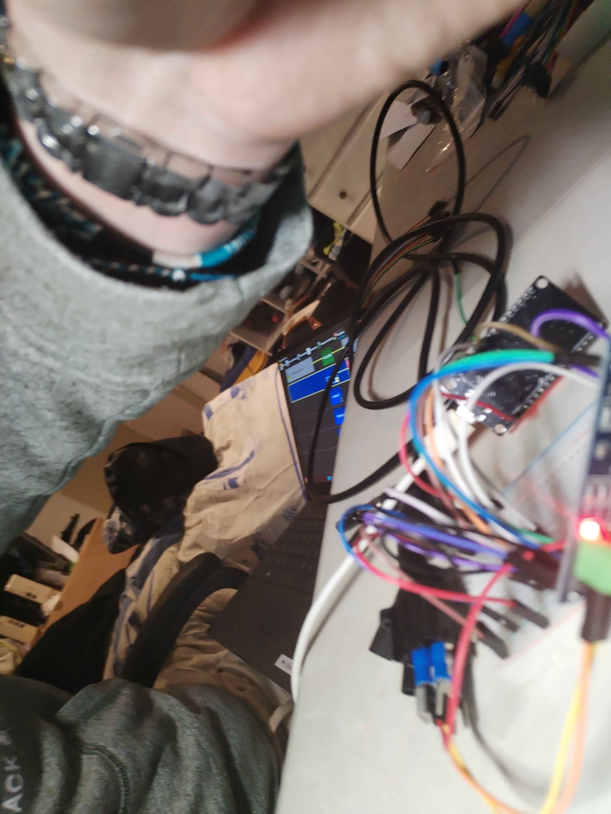
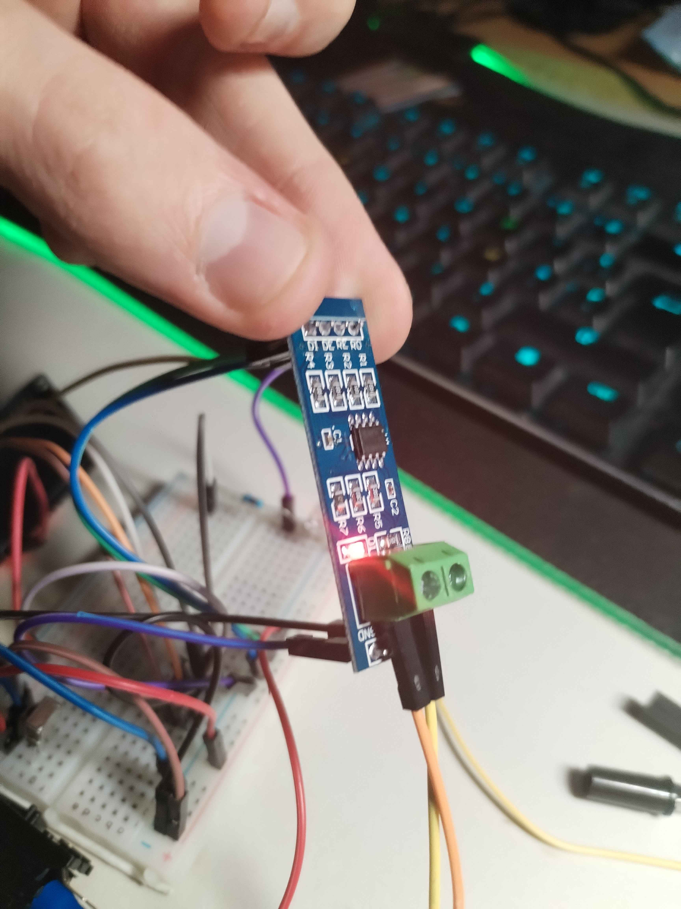
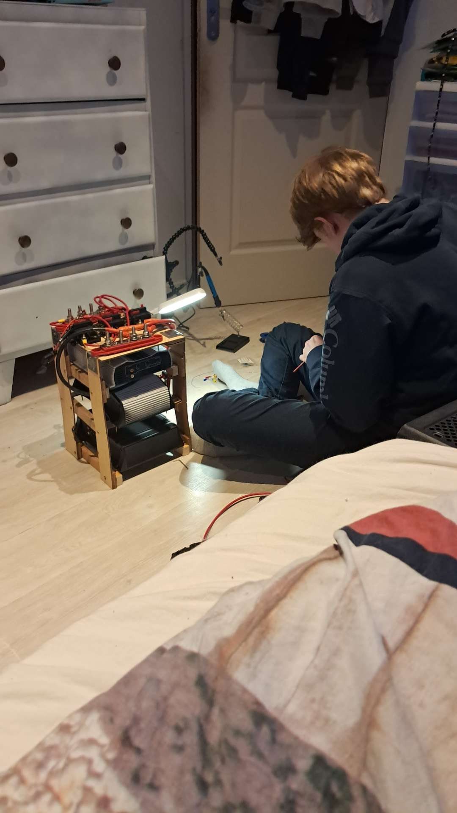
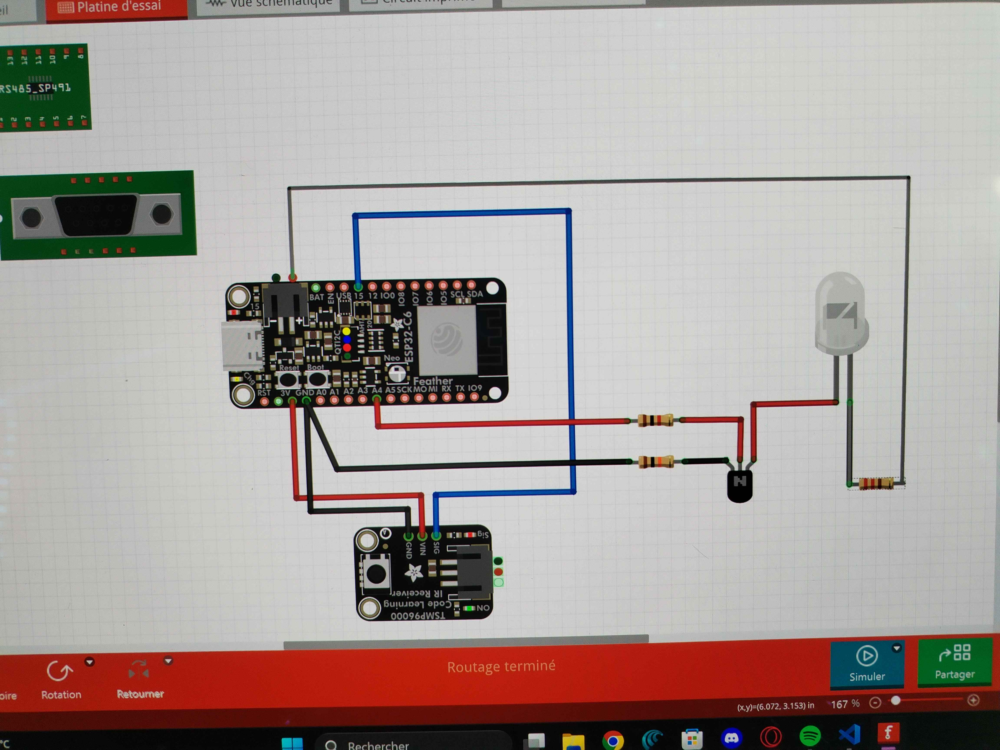
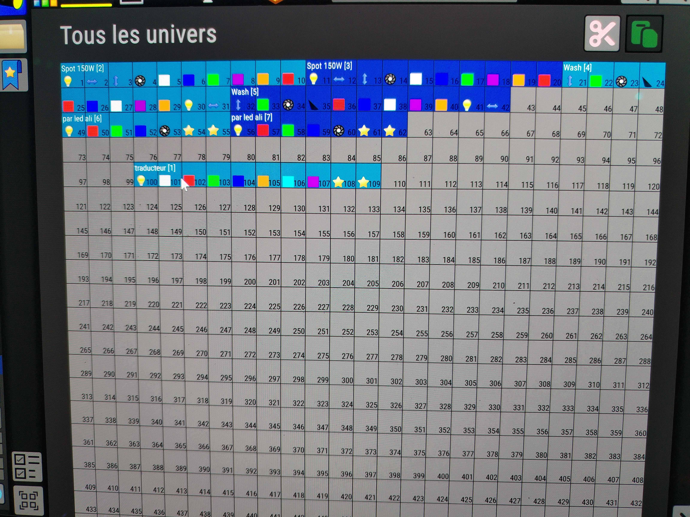
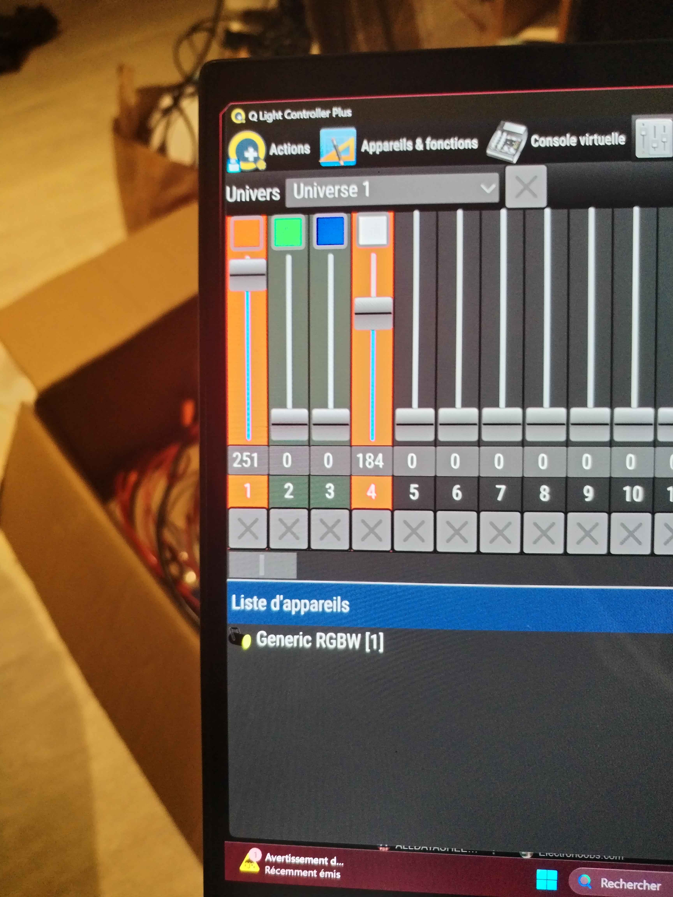

Auto-évaluation “honnête mais constructive”. Objectif : se situer + savoir quoi améliorer.
⚪ Non acquis🔵 En cours🟢 Acquis📝 “Pourquoi” = preuve / exemple
Compétence 1 — Réaliser un développement d’application
A2 (Parcours A)
cliquer pour ouvrir/fermer
Élaborer et implémenter les spécifications fonctionnelles et non fonctionnelles à partir des exigences
C1.A2 — AC1
Appliquer des principes d’accessibilité et d’ergonomie
C1.A2 — AC2
Adopter de bonnes pratiques de conception et de programmation
C1.A2 — AC3
Vérifier et valider la qualité de l’application par les tests
C1.A2 — AC4
Compétence 2 — Optimiser des applications
A2 (Parcours A)
cliquer pour ouvrir/fermer
Choisir des structures de données complexes adaptées au problème
C2.A2 — AC1
Utiliser des techniques algorithmiques adaptées pour des problèmes complexes
C2.A2 — AC2
Comprendre les enjeux et moyens de sécurisation des données et du code
C2.A2 — AC3
Évaluer l’impact environnemental et sociétal des solutions proposées
C2.A2 — AC4
Compétence 3 — Administrer des systèmes informatiques communicants complexes
A2 (Parcours A)
cliquer pour ouvrir/fermer
Concevoir et développer des applications communicantes
C3.A2 — AC1
Utiliser des serveurs et des services réseaux virtualisés
C3.A2 — AC2
Sécuriser les services et données d’un système
C3.A2 — AC3
Compétence 4 — Gérer des données de l’information
A2 (Parcours A)
cliquer pour ouvrir/fermer
Optimiser les modèles de données de l’entreprise
C4.A2 — AC1
Assurer la confidentialité des données (intégrité et sécurité)
C4.A2 — AC2
Organiser la restitution de données à travers la programmation et la visualisation
C4.A2 — AC3
Manipuler des données hétérogènes
C4.A2 — AC4
Compétence 5 — Conduire un projet
A2 (Parcours A)
cliquer pour ouvrir/fermer
Identifier les processus présents dans une organisation en vue d’améliorer les systèmes d’information
C5.A2 — AC1
Formaliser les besoins du client et de l’utilisateur
C5.A2 — AC2
Identifier les critères de faisabilité d’un projet informatique
C5.A2 — AC3
Définir et mettre en œuvre une démarche de suivi de projet
C5.A2 — AC4
Compétence 6 — Collaborer au sein d’une équipe informatique
A2 (Parcours A)
cliquer pour ouvrir/fermer
Comprendre la diversité, la structure et la dimension de l’informatique dans une organisation
C6.A2 — AC1
Appliquer une démarche pour intégrer une équipe informatique au sein d’une organisation
C6.A2 — AC2
Mobiliser les compétences interpersonnelles pour intégrer une équipe informatique
C6.A2 — AC3
Rendre compte de son activité professionnelle
C6.A2 — AC4
Compétence 7 — Parcours personnel par semestre
Apprentissages, pratique et projet personnel
cliquer pour ouvrir/fermer
Cette partie regroupe des activités et projets personnels suivis sur plusieurs semestres.
Le point commun est le même à chaque fois : apprendre par la pratique, gagner en régularité
et aller vers quelque chose de plus concret d’un semestre à l’autre.
Semestre 1
Régions et capitales régionales
Au premier semestre, j’ai surtout travaillé la mémorisation des régions et des capitales régionales.
L’objectif était d’être plus régulier dans l’apprentissage et de trouver une méthode simple pour retenir
des informations de manière plus durable.
Ce que ça m’a apporté
Rigueur, répétition et mise en place d’une méthode de travail plus régulière.
Semestre 2
Guitare
Au deuxième semestre, je me suis tourné vers la guitare. Cela m’a demandé de la patience,
de la coordination et un vrai effort de régularité. Même si je suis encore en progression,
c’est un bon exemple d’apprentissage sur la durée.
Point important
Travailler petit à petit, accepter de recommencer et progresser grâce à la pratique.

Pratique instrumentale
Un semestre davantage axé sur la régularité et la progression personnelle.
Semestre 3
Mixage
Au troisième semestre, je me suis davantage intéressé au mixage. J’ai commencé à mieux comprendre
le matériel, les réglages et la manière d’obtenir un rendu plus propre. C’est à ce moment-là
que l’aspect technique a pris plus de place dans mes centres d’intérêt.
Ce que j’ai développé
Une meilleure écoute, plus d’attention aux réglages et un intérêt plus fort pour le matériel.

Mixage et réglages
Comprendre le son, tester et affiner pour obtenir un résultat plus propre.
Semestre actuel
Soudure, électronique et projet DMX vers IR
Ce semestre, j’ai poursuivi cette logique avec un projet plus technique autour de la soudure et
de l’électronique. L’idée était de réaliser un traducteur DMX vers IR afin de pouvoir contrôler
des rubans LED en DMX. Ce projet m’a demandé de réfléchir au câblage, au montage, aux tests et à
la manière d’intégrer le système dans un usage concret.
Projet
Objectif : piloter des rubans LED avec une logique DMX en passant par un montage électronique fait maison.

Prototype
Vue d’ensemble du contrôleur réalisé pour traduire le signal vers les LED.

Câblage
Partie montage, soudure et mise en place des connexions.

Soudure
Phase de réalisation manuelle pendant le montage du projet.

Schéma
Travail de préparation et de compréhension du montage avant les essais.

Intégration
Mise en place du système dans son environnement d’utilisation.

Tests DMX
Vérification du pilotage et des essais de contrôle avec la chaîne complète.
Sauvegarde locale (dans ton navigateur). Si tu changes de PC/navigateur → ça ne suit pas.